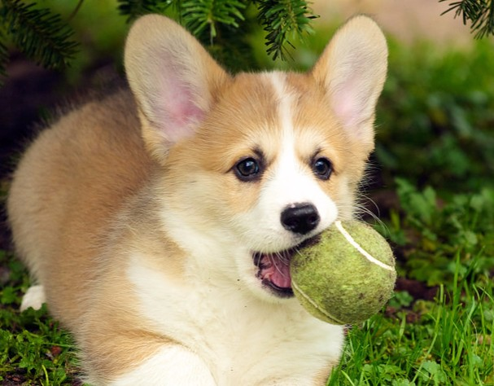
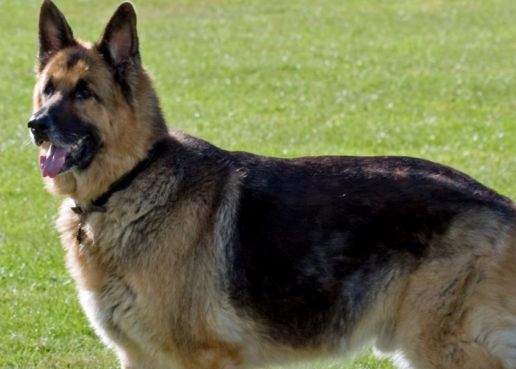
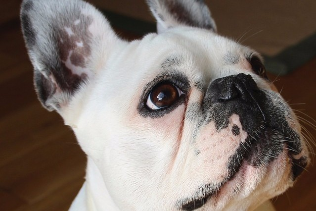

this picture show a siberian husky sitting in the snow. most likely after having some fun and playing around. as they are known for that.
this is a pictureof a corgi. presumably after playing catch with its tennis ball.
this is a picture of a german shepard. these dog breeds are mostly used for millitary and police service,
this is a picture of a pupy bulldog looking into the camera with a sad little face.
this is a picture of a puppy golden retriever. its sitting there looking happy.